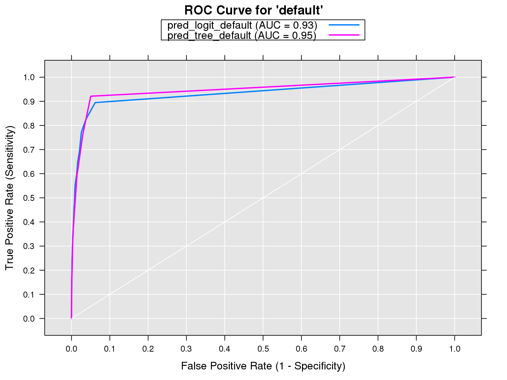

Modeling and Scoring with RevoScaleR
Ali Zaidi
November 28, 2016
Introduction
URL for Today
Please refer to the github repository for course materials github.com/akzaidi/R-cadence
Agenda
- We will learn in this tutorial how to train and test models with the
RevoScaleRpackage. - Use your knowledge of data manipulation to create train and test sets.
- Use the modeling functions in
RevoScaleRto train a model. - Use the
rxPredictfunction to test/score a model. - We will see how you can score models on a variety of data sources.
- Use a functional methodology, i.e., we will create functions to automate the modeling, validation, and scoring process.
Prerequisites
- Understanding of
rxDataStepandxdfs - Familiarity with
RevoScaleRmodeling and datastep functions:rxLinMod,rxGlm,rxLogit,rxDTree,rxDForest,rxSplit, andrxPredict - Understand how to write functions in R
- Access to at least one interesting dataset
Typical Lifecycle

Typical Modeling Lifecycle:
- Start with a data set
- Split into a training set and validation set(s)
- Use the
ScaleRmodeling functions on the train set to estimate your model - Use
rxPredictto validate/score your results
Mortgage Dataset
- We will work with a mortgage dataset, which contains mortgage and credit profiles for various mortgage holders
mort_path <- paste(rxGetOption("sampleDataDir"), "mortDefaultSmall.xdf", sep = "/")
file.copy(mort_path, "mortgage.xdf", overwrite = TRUE)## [1] TRUEmort_xdf <- RxXdfData("mortgage.xdf")
rxGetInfo(mort_xdf, getVarInfo = TRUE, numRows = 5)## File name: /home/alizaidi/mr4ds/Student-Resources/rmarkdown/mortgage.xdf
## Number of observations: 1e+05
## Number of variables: 6
## Number of blocks: 10
## Compression type: zlib
## Variable information:
## Var 1: creditScore, Type: integer, Low/High: (470, 925)
## Var 2: houseAge, Type: integer, Low/High: (0, 40)
## Var 3: yearsEmploy, Type: integer, Low/High: (0, 14)
## Var 4: ccDebt, Type: integer, Low/High: (0, 14094)
## Var 5: year, Type: integer, Low/High: (2000, 2009)
## Var 6: default, Type: integer, Low/High: (0, 1)
## Data (5 rows starting with row 1):
## creditScore houseAge yearsEmploy ccDebt year default
## 1 691 16 9 6725 2000 0
## 2 691 4 4 5077 2000 0
## 3 743 18 3 3080 2000 0
## 4 728 22 1 4345 2000 0
## 5 745 17 3 2969 2000 0Transform Default to Categorical
- We might be interested in estimating a classification model for predicting defaults based on credit attributes
rxDataStep(inData = mort_xdf,
outFile = mort_xdf,
overwrite = TRUE,
transforms = list(default_flag = factor(ifelse(default == 1,
"default",
"current"))
)
)
rxGetInfo(mort_xdf, numRows = 3, getVarInfo = TRUE)## File name: /home/alizaidi/mr4ds/Student-Resources/rmarkdown/mortgage.xdf
## Number of observations: 1e+05
## Number of variables: 7
## Number of blocks: 10
## Compression type: zlib
## Variable information:
## Var 1: creditScore, Type: integer, Low/High: (470, 925)
## Var 2: houseAge, Type: integer, Low/High: (0, 40)
## Var 3: yearsEmploy, Type: integer, Low/High: (0, 14)
## Var 4: ccDebt, Type: integer, Low/High: (0, 14094)
## Var 5: year, Type: integer, Low/High: (2000, 2009)
## Var 6: default, Type: integer, Low/High: (0, 1)
## Var 7: default_flag
## 2 factor levels: current default
## Data (3 rows starting with row 1):
## creditScore houseAge yearsEmploy ccDebt year default default_flag
## 1 691 16 9 6725 2000 0 current
## 2 691 4 4 5077 2000 0 current
## 3 743 18 3 3080 2000 0 currentModeling
Generating Training and Test Sets
- The first step to estimating a model is having a tidy training dataset.
- We will work with the mortgage data and use
rxSplitto create partitions. rxSplitsplits an input.xdfinto multiple.xdfs, similar in spirit to thesplitfunction in base R- output is a list
- First step is to create a split variable
- We will randomly partition the data into a train and test sample, with 75% in the former, and 25% in the latter
Partition Function
create_partition <- function(xdf = mort_xdf,
partition_size = 0.75, ...) {
rxDataStep(inData = xdf,
outFile = xdf,
transforms = list(
trainvalidate = factor(
ifelse(rbinom(.rxNumRows,
size = 1, prob = splitperc),
"train", "validate")
)
),
transformObjects = list(splitperc = partition_size),
overwrite = TRUE, ...)
splitDS <- rxSplit(inData = xdf,
#outFilesBase = ,
outFileSuffixes = c("train", "validate"),
splitByFactor = "trainvalidate",
overwrite = TRUE)
return(splitDS)
}Minimizing IO
Transforms in rxSplit
While the above example does what we want it to do, it’s not very efficient. It requires two passes over the data, first to add the trainvalidate column, and then another to split it into train and validate sets. We could do all of that in a single step if we pass the transforms directly to rxSplit.
create_partition <- function(xdf = mort_xdf,
partition_size = 0.75, ...) {
splitDS <- rxSplit(inData = xdf,
transforms = list(
trainvalidate = factor(
ifelse(rbinom(.rxNumRows,
size = 1, prob = splitperc),
"train", "validate")
)
),
transformObjects = list(splitperc = partition_size),
outFileSuffixes = c("train", "validate"),
splitByFactor = "trainvalidate",
overwrite = TRUE)
return(splitDS)
}Generating Training and Test Sets
List of xdfs
- The
create_partitionfunction will output a listxdfs
mort_split <- create_partition(reportProgress = 0)
names(mort_split) <- c("train", "validate")
lapply(mort_split, rxGetInfo)## $train
## File name: /home/alizaidi/mr4ds/Student-Resources/rmarkdown/mortgage.trainvalidate.train.xdf
## Number of observations: 74877
## Number of variables: 8
## Number of blocks: 10
## Compression type: zlib
##
## $validate
## File name: /home/alizaidi/mr4ds/Student-Resources/rmarkdown/mortgage.trainvalidate.validate.xdf
## Number of observations: 25123
## Number of variables: 8
## Number of blocks: 10
## Compression type: zlibBuild Your Model
Model Formula
- Once you have a training dataset, the most appropriate next step is to estimate your model
RevoScaleRprovides a plethora of modeling functions to choose from: decision trees, ensemble trees, linear models, and generalized linear models- All take a formula as the first object in their call
make_form <- function(xdf = mort_xdf,
resp_var = "default_flag",
vars_to_skip = c("default", "trainvalidate")) {
library(stringr)
non_incl <- paste(vars_to_skip, collapse = "|")
x_names <- names(xdf)
features <- x_names[!str_detect(x_names, resp_var)]
features <- features[!str_detect(features, non_incl)]
form <- as.formula(paste(resp_var, paste0(features, collapse = " + "),
sep = " ~ "))
return(form)
}
## Turns out, RevoScaleR already has a function for this
formula(mort_xdf, depVar = "default_flag", varsToDrop = c("defaultflag", "trainvalidate"))## default_flag ~ creditScore + houseAge + yearsEmploy + ccDebt +
## year + default
## <environment: 0x13b765e28>Build Your Model
Modeling Function
- Use the
make_formfunction inside your favoriterxmodeling function - Default value will be a logistic regression, but can update the
modelparameter to anyrxmodeling function
make_form()## default_flag ~ creditScore + houseAge + yearsEmploy + ccDebt +
## year
## <environment: 0x13b430940>estimate_model <- function(xdf_data = mort_split[["train"]],
form = make_form(xdf_data),
model = rxLogit, ...) {
rx_model <- model(form, data = xdf_data, ...)
return(rx_model)
}Build Your Model
Train Your Model with Our Modeling Function
- Let us now train our logistic regression model for defaults using the
estimate_modelfunction from the last slide
default_model_logit <- estimate_model(mort_split$train,
reportProgress = 0)
summary(default_model_logit)## Call:
## model(formula = form, data = xdf_data, reportProgress = 0)
##
## Logistic Regression Results for: default_flag ~ creditScore +
## houseAge + yearsEmploy + ccDebt + year
## Data: xdf_data (RxXdfData Data Source)
## File name:
## /home/alizaidi/mr4ds/Student-Resources/rmarkdown/mortgage.trainvalidate.train.xdf
## Dependent variable(s): default_flag
## Total independent variables: 6
## Number of valid observations: 74877
## Number of missing observations: 0
## -2*LogLikelihood: 2449.8945 (Residual deviance on 74871 degrees of freedom)
##
## Coefficients:
## Estimate Std. Error z value Pr(>|z|)
## (Intercept) -1.287e+03 7.129e+01 -18.054 2.22e-16 ***
## creditScore -7.340e-03 1.214e-03 -6.044 1.50e-09 ***
## houseAge 2.726e-02 7.799e-03 3.496 0.000473 ***
## yearsEmploy -2.332e-01 3.042e-02 -7.665 2.22e-16 ***
## ccDebt 1.226e-03 4.087e-05 30.007 2.22e-16 ***
## year 6.373e-01 3.549e-02 17.958 2.22e-16 ***
## ---
## Signif. codes: 0 '***' 0.001 '**' 0.01 '*' 0.05 '.' 0.1 ' ' 1
##
## Condition number of final variance-covariance matrix: 2.4349
## Number of iterations: 9Building Additional Models
- We can change the parameters of the
estimate_modelfunction to create a different model relatively quickly
default_model_tree <- estimate_model(mort_split$train,
model = rxDTree,
minBucket = 10,
reportProgress = 0)
summary(default_model_tree)## Length Class Mode
## frame 9 data.frame list
## where 0 -none- NULL
## call 5 -none- call
## cptable 35 -none- numeric
## method 1 -none- character
## parms 3 -none- list
## control 9 -none- list
## splits 95 -none- numeric
## xvars 5 -none- character
## variable.importance 5 -none- numeric
## ordered 5 -none- logical
## valid.obs 1 -none- numeric
## missing.obs 1 -none- numeric
## params 65 -none- list
## formula 3 formula call# library(RevoTreeView)
# plot(createTreeView(default_model_tree))Validation
How Does it Perform on Unseen Data
rxPredict for Logistic Regression
## [1] TRUE- Now that we have built our model, our next step is to see how it performs on data it has yet to see
- We can use the
rxPredictfunction to score/validate our results
default_logit_scored <- rxPredict(default_model_logit,
mort_split$validate,
"scored.xdf",
writeModelVars = TRUE,
extraVarsToWrite = "default",
predVarNames = c("pred_logit_default"))
rxGetInfo(default_logit_scored, numRows = 2)## File name: /home/alizaidi/mr4ds/Student-Resources/rmarkdown/scored.xdf
## Number of observations: 25123
## Number of variables: 8
## Number of blocks: 10
## Compression type: zlib
## Data (2 rows starting with row 1):
## pred_logit_default default default_flag creditScore houseAge yearsEmploy
## 1 4.859631e-06 0 current 728 22 1
## 2 2.247419e-08 0 current 677 18 5
## ccDebt year
## 1 4345 2000
## 2 505 2000Visualize Model Results
rxRoc(actualVarName = "default",
predVarNames ="pred_logit_default",
data = default_logit_scored)## threshold predVarName sensitivity specificity
## 1 0.00 pred_logit_default 1.00000000 0.0000000
## 2 0.01 pred_logit_default 0.89473684 0.9380223
## 3 0.02 pred_logit_default 0.82456140 0.9626135
## 4 0.03 pred_logit_default 0.77192982 0.9742493
## 5 0.04 pred_logit_default 0.69298246 0.9792875
## 6 0.05 pred_logit_default 0.64912281 0.9837658
## 7 0.06 pred_logit_default 0.59649123 0.9865249
## 8 0.07 pred_logit_default 0.57017544 0.9889640
## 9 0.08 pred_logit_default 0.55263158 0.9905234
## 10 0.09 pred_logit_default 0.51754386 0.9915630
## 11 0.10 pred_logit_default 0.47368421 0.9924427
## 12 0.11 pred_logit_default 0.46491228 0.9932824
## 13 0.12 pred_logit_default 0.43859649 0.9938022
## 14 0.13 pred_logit_default 0.41228070 0.9944420
## 15 0.14 pred_logit_default 0.37719298 0.9953217
## 16 0.15 pred_logit_default 0.35964912 0.9955216
## 17 0.16 pred_logit_default 0.35087719 0.9958015
## 18 0.17 pred_logit_default 0.33333333 0.9962414
## 19 0.18 pred_logit_default 0.33333333 0.9967612
## 20 0.19 pred_logit_default 0.30701754 0.9970411
## 21 0.20 pred_logit_default 0.30701754 0.9974009
## 22 0.21 pred_logit_default 0.29824561 0.9976009
## 23 0.22 pred_logit_default 0.28947368 0.9977608
## 24 0.23 pred_logit_default 0.28070175 0.9979207
## 25 0.24 pred_logit_default 0.27192982 0.9979607
## 26 0.25 pred_logit_default 0.27192982 0.9980407
## 27 0.26 pred_logit_default 0.27192982 0.9981607
## 28 0.27 pred_logit_default 0.26315789 0.9982006
## 29 0.28 pred_logit_default 0.25438596 0.9982806
## 30 0.29 pred_logit_default 0.25438596 0.9985205
## 31 0.30 pred_logit_default 0.22807018 0.9987604
## 32 0.31 pred_logit_default 0.21929825 0.9988004
## 33 0.32 pred_logit_default 0.21052632 0.9988004
## 34 0.33 pred_logit_default 0.20175439 0.9988804
## 35 0.34 pred_logit_default 0.18421053 0.9989204
## 36 0.35 pred_logit_default 0.18421053 0.9990403
## 37 0.36 pred_logit_default 0.17543860 0.9991603
## 38 0.37 pred_logit_default 0.17543860 0.9992003
## 39 0.38 pred_logit_default 0.16666667 0.9992403
## 40 0.39 pred_logit_default 0.14912281 0.9992803
## 41 0.40 pred_logit_default 0.13157895 0.9993202
## 42 0.42 pred_logit_default 0.13157895 0.9993602
## 43 0.44 pred_logit_default 0.13157895 0.9994002
## 44 0.45 pred_logit_default 0.13157895 0.9994402
## 45 0.47 pred_logit_default 0.12280702 0.9994802
## 46 0.50 pred_logit_default 0.11403509 0.9995202
## 47 0.51 pred_logit_default 0.10526316 0.9996401
## 48 0.53 pred_logit_default 0.09649123 0.9997201
## 49 0.54 pred_logit_default 0.09649123 0.9997601
## 50 0.55 pred_logit_default 0.09649123 0.9998001
## 51 0.56 pred_logit_default 0.08771930 0.9998001
## 52 0.57 pred_logit_default 0.07894737 0.9998001
## 53 0.58 pred_logit_default 0.07894737 0.9998401
## 54 0.61 pred_logit_default 0.07894737 0.9999200
## 55 0.66 pred_logit_default 0.07017544 0.9999200
## 56 0.69 pred_logit_default 0.07017544 0.9999600
## 57 0.70 pred_logit_default 0.06140351 0.9999600
## 58 0.71 pred_logit_default 0.06140351 1.0000000
## 59 0.72 pred_logit_default 0.05263158 1.0000000
## 60 0.79 pred_logit_default 0.04385965 1.0000000
## 61 0.80 pred_logit_default 0.03508772 1.0000000
## 62 0.85 pred_logit_default 0.02631579 1.0000000
## 63 0.89 pred_logit_default 0.01754386 1.0000000
## 64 0.92 pred_logit_default 0.00877193 1.0000000
## 65 0.96 pred_logit_default 0.00000000 1.0000000Testing a Second Model
rxPredict for Decision Tree
- We saw how easy it was to train on different in the previous sections
- Similary simple to test different models
default_tree_scored <- rxPredict(default_model_tree,
mort_split$validate,
"scored.xdf",
writeModelVars = TRUE,
predVarNames = c("pred_tree_current",
"pred_tree_default"))Visualize Multiple ROCs
rxRocCurve("default",
c("pred_logit_default", "pred_tree_default"),
data = default_tree_scored)
Lab - Estimate Other Models Using the Functions Above
Ensemble Tree Algorithms
Two of the most predictive algorithms in the RevoScaleR package are the rxBTrees and rxDForest algorithms, for gradient boosted decision trees and random forests, respectively.
Use the above functions and estimate a model for each of those algorithms, and add them to the default_tree_scored dataset to visualize ROC and AUC metrics.
## Starter code
default_model_forest <- estimate_model(mort_split$train,
model = rxDForest,
nTree = 100,
importance = TRUE,
reportProgress = 0)
default_forest_scored <- rxPredict(default_model_forest,
mort_split$validate,
"scored.xdf",
type = 'prob',
predVarNames = c("pred_forest_current", "pred_forest_default", "pred_default"))
## same for rxBTrees
default_model_gbm <- estimate_model(mort_split$train,
model = rxBTrees,
importance = TRUE,
nTree = 100, reportProgress = 0)
default_gbm_scored <- rxPredict(default_model_gbm,
mort_split$validate,
"scored.xdf",
predVarNames = c("pred_gbm_default"))#
# rxRocCurve(actualVarName = "default",
# predVarNames = c("pred_tree_default",
# "pred_logit_default",
# "pred_forest_default",
# "pred_gbm_default"),
# data = 'scored.xdf')More Advanced Topics
Scoring on Non-XDF Data Sources
Using a CSV as a Data Source
- The previous slides focused on using xdf data sources
- Most of the
rxfunctions will work on non-xdf data sources - For training, which is often an iterative process, it is recommended to use xdfs
- For scoring/testing, which requires just one pass through the data, feel free to use raw data!
csv_path <- paste(rxGetOption("sampleDataDir"),
"mortDefaultSmall2009.csv",
sep = "/")
file.copy(csv_path, "mortDefaultSmall2009.csv", overwrite = TRUE)## [1] TRUEmort_csv <- RxTextData("mortDefaultSmall2009.csv")Regression Tree
- For a slightly different model, we will estimate a regression tree.
- Just change the parameters in the
estimate_modelfunction
tree_model_ccdebt <- estimate_model(xdf_data = mort_split$train,
form = make_form(mort_split$train,
"ccDebt",
vars_to_skip = c("default_flag",
"trainvalidate")),
model = rxDTree)
# plot(RevoTreeView::createTreeView(tree_model_ccdebt))Test on CSV
if (file.exists("mort2009predictions.xdf")) file.remove("mort2009predictions.xdf")## [1] TRUErxPredict(tree_model_ccdebt,
data = mort_csv,
outData = "mort2009predictions.xdf",
writeModelVars = TRUE)
mort_2009_pred <- RxXdfData("mort2009predictions.xdf")
rxGetInfo(mort_2009_pred, numRows = 1)## File name: /home/alizaidi/mr4ds/Student-Resources/rmarkdown/mort2009predictions.xdf
## Number of observations: 10000
## Number of variables: 7
## Number of blocks: 1
## Compression type: zlib
## Data (1 row starting with row 1):
## ccDebt_Pred ccDebt creditScore houseAge yearsEmploy year default
## 1 4938.398 3661 701 23 2 2009 0Multiclass Classification
Convert Year to Factor
- We have seen how to estimate a binary classification model and a regression tree
- How would we estimate a multiclass classification model?
- Let’s try to predict mortgage origination based on other variables
- Use
rxFactorsto convert year to a factor variable
mort_xdf_factor <- rxFactors(inData = mort_xdf,
factorInfo = c("year"),
outFile = "mort_year.xdf",
overwrite = TRUE)Convert Year to Factor
rxGetInfo(mort_xdf_factor, getVarInfo = TRUE, numRows = 4)## File name: /home/alizaidi/mr4ds/Student-Resources/rmarkdown/mort_year.xdf
## Number of observations: 1e+05
## Number of variables: 7
## Number of blocks: 10
## Compression type: zlib
## Variable information:
## Var 1: creditScore, Type: integer, Low/High: (470, 925)
## Var 2: houseAge, Type: integer, Low/High: (0, 40)
## Var 3: yearsEmploy, Type: integer, Low/High: (0, 14)
## Var 4: ccDebt, Type: integer, Low/High: (0, 14094)
## Var 5: year
## 10 factor levels: 2000 2001 2002 2003 2004 2005 2006 2007 2008 2009
## Var 6: default, Type: integer, Low/High: (0, 1)
## Var 7: default_flag
## 2 factor levels: current default
## Data (4 rows starting with row 1):
## creditScore houseAge yearsEmploy ccDebt year default default_flag
## 1 691 16 9 6725 2000 0 current
## 2 691 4 4 5077 2000 0 current
## 3 743 18 3 3080 2000 0 current
## 4 728 22 1 4345 2000 0 currentEstimate Multiclass Classification
- You know the drill! Change the parameters in
estimate_model:
tree_multiclass_year <- estimate_model(xdf_data = mort_xdf_factor,
form = make_form(mort_xdf_factor,
"year",
vars_to_skip = c("default",
"trainvalidate")),
model = rxDTree)Predict Multiclass Classification
- Score the results
multiclass_preds <- rxPredict(tree_multiclass_year,
data = mort_xdf_factor,
writeModelVars = TRUE,
outData = "multi.xdf",
overwrite = TRUE)Predict Multiclass Classification
- View the results
- Predicted/scored column for each level of the response
- Sum up to one
rxGetInfo(multiclass_preds, numRows = 3)Conclusion
Thanks for Attending!
- Any questions?
- Try different models!
- Try modeling with
rxDForest,rxBTrees: have significantly higher predictive accuracy, somewhat less interpretability